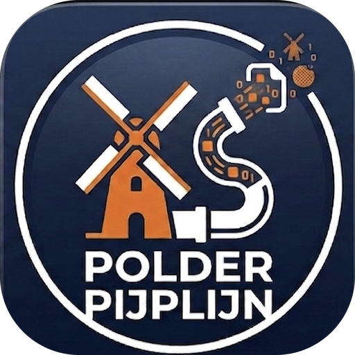
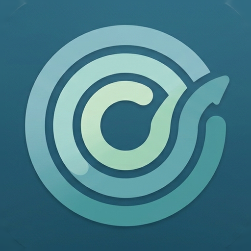

Polderpijplijn
Een paar persoonlijke apps, met aandacht gemaakt. Geen tracking, geen advertenties, geen accounts.
A few personal apps, made with care. No tracking, no ads, no accounts.
Over ons
About
Deze apps zijn gemaakt door Maarten, samen met Claude (Anthropic) als programmeerpartner. Het zijn kleine zelf ontwikkelde projecten, gebouwd uit nieuwsgierigheid.
These apps are made by Maarten, together with Claude (Anthropic) as a programming partner. They are small, self-developed projects, made out of curiosity.
Toegankelijkheid
Accessibility
Deze apps en deze website zijn gemaakt om voor zoveel mogelijk mensen bruikbaar te zijn — ook voor wie slecht ziet, niet met een muis werkt, of een schermlezer gebruikt. Lees meer ›
These apps and this website are built to be usable by as many people as possible — including those with low vision, people who don't use a mouse, and people who rely on a screen reader. Read more ›
Apps

Hulp & support
Help & support
Iets werkt niet, een vraag of een idee? Naar Help & support ›
Something not working, a question or an idea? Go to Help & support ›